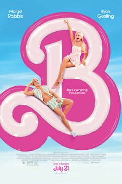

1. Everything Everywhere All at Once (2022)

Una comedia de ciencia ficción caótica y emotiva sobre el multiverso, protagonizada por Michelle Yeoh.
2. Oppenheimer (2023)

Dirigida por Christopher Nolan, una impresionante biografía del creador de la bomba atómica.
3. Spider-Man: Across the Spider-Verse (2023)
Una espectacular secuela animada que expande el universo de Spider-Man con gran estilo visual y emoción.
4. Barbie (2023)
Una película creativa, colorida y reflexiva sobre la identidad, la sociedad y el empoderamiento femenino.
5. Dune (2021)

Una épica de ciencia ficción basada en la novela de Frank Herbert, dirigida por Denis Villeneuve.
6. The Banshees of Inisherin (2022)

Una comedia oscura e introspectiva sobre la amistad, ambientada en una isla remota de Irlanda.
üéûÔ∏è Otras pel√≠culas recomendadas:
- Top Gun: Maverick (2022)
- The Whale (2022)
- Past Lives (2023)